国・地域の見分け方
- 言語は日本語
- ドメインは.jp
見つかる標識
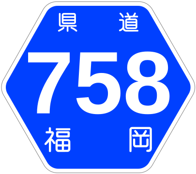
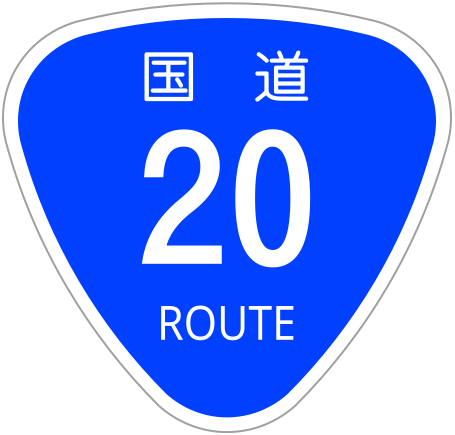
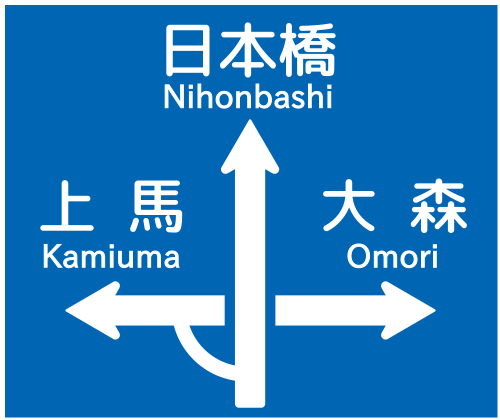
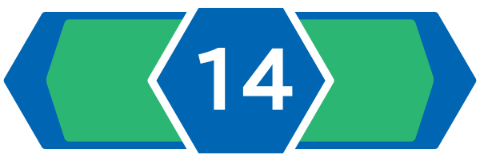
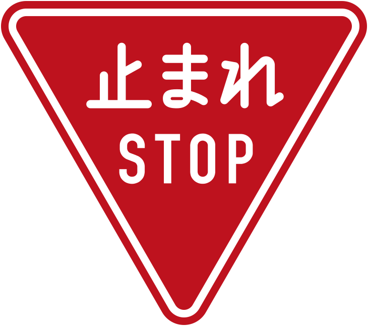
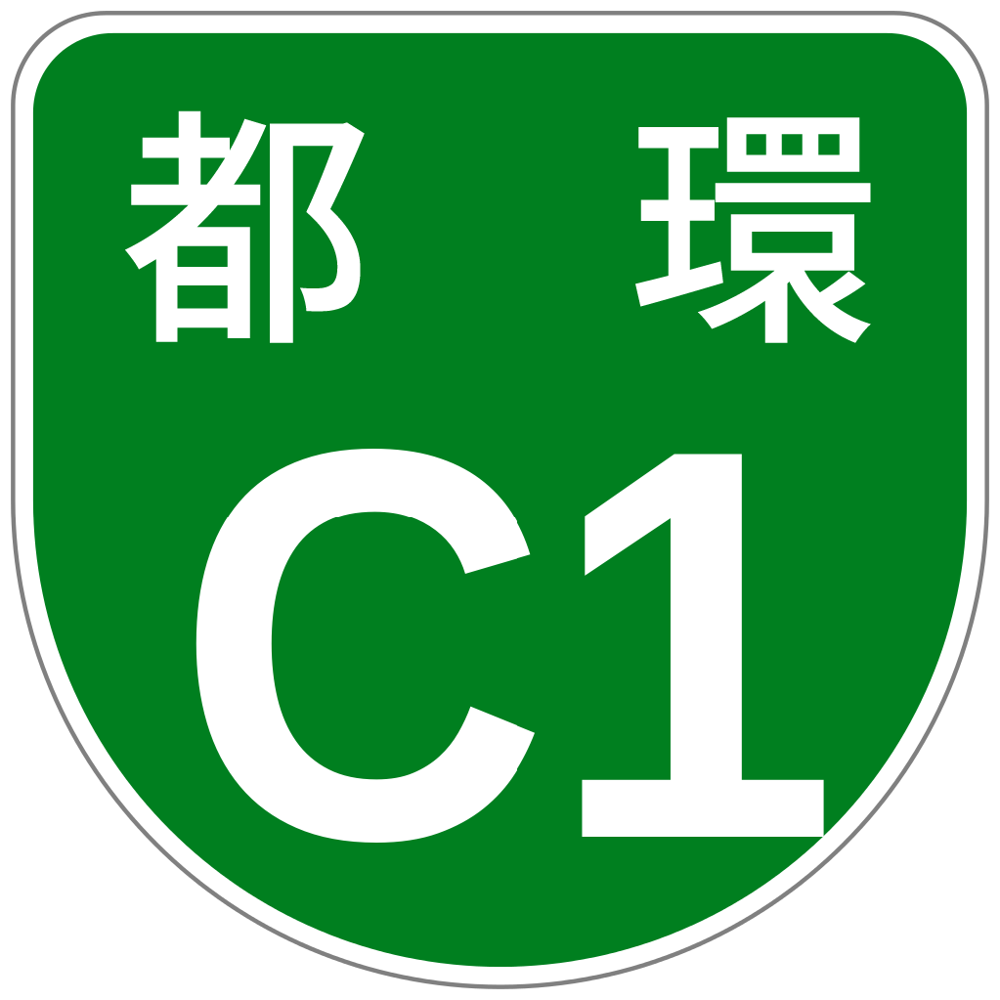
代表的な企業


Googleマップで「コンビニ」のようなたくさんある施設名を検索すると、IPアドレスをもとに家に近い地域が表示されることがあるので配信する時は注意する。Google検索の結果画面の一番下にもIPに基づいた都市名が表示されることがあるので注意する（参考：Home > 役立つページ）。配信をする場合は事前に配信テストすることを強くおすすめします。

スギは日本以外で見つかることはまず無い。見つかるとしても人工的に導入されたもの。
日本以外で見つかることがあるとすれば、木材用に導入され栽培されているアゾレス諸島の可能性が非常に高い(参考文献 スギ)(参考文献 Azorean Criptomeria - Cryptomeria japonica D. Don)。
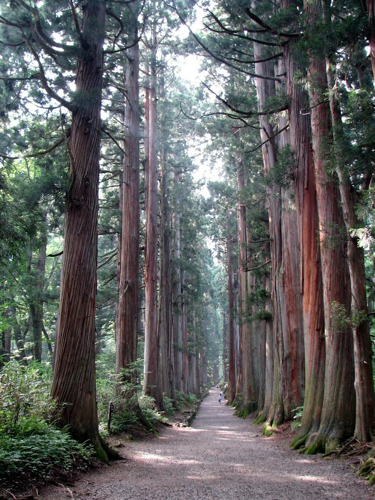
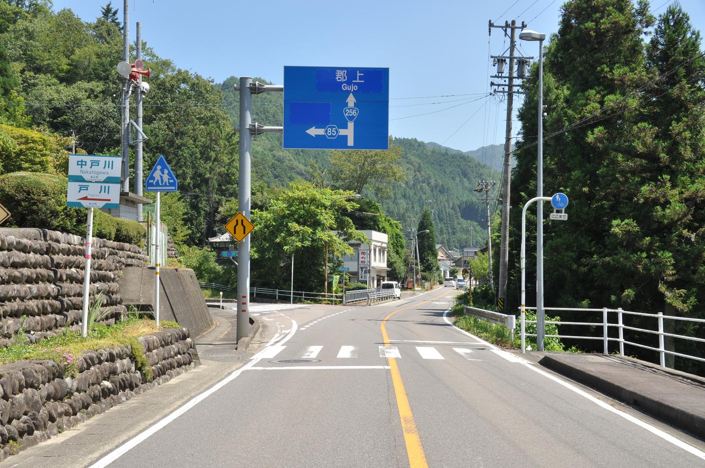
道端にオレンジの反射板（デリネーター）がある(参考文献 日本視線誘導標協会)。

白いガードレールがある
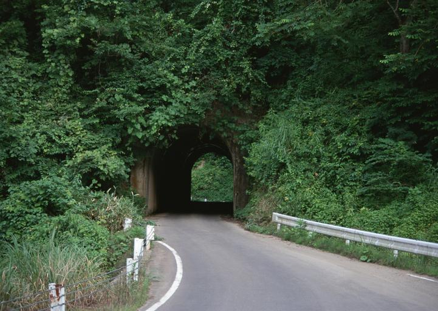

州・地域の絞り込み
- 電話番号の市外局番でおよその地域がわかる
- 道路標示によって県が分かることがある
- 北海道
- コンビニにセイコーマートがある
- 道路にスノーポール・視線誘導標がある
- 寒い地域特有の家が多い
- 屋根が平ら
- カスケード型のガレージがある
- ホームタンクと呼ばれる灯油タンクのある家が目立つ(参考文献 サンダイヤオイルタンク)
- 中国地方
- 石州瓦を用いた家が東広島を中心に山陰地方にあり屋根が赤色っぽい
- ガードレールが夏みかんの色なら山口県
- 九州地方
- ススキが多い(参考文献 福岡市の自然-山編-)
- 熊本の標識には赤いテープが巻いてある
- 宮崎の標識には黄色いテープが巻いてある
- 路面の『止まれ』の文字の『れ』の縦棒が他の地域と長さが違う？
- 沖縄地方
- 平屋の建物が多い
- 建物に白い平らな建物が多い
- 屋根上に給水タンクがある
- 壁などに「石敢當」と書いてある
市外局番が札幌(011)～東京(03)～大阪(06)～鹿児島(099)でなんとなくグラデーションとなっているので大体の位置がわかる。
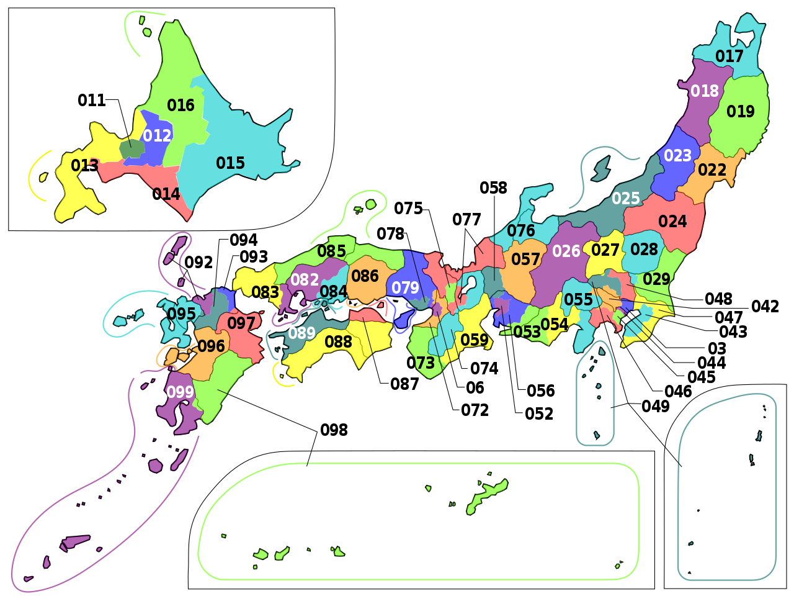
都道府県ごとの横断歩道前ダイヤマーク標示一覧(2024/6/14更新) pic.twitter.com/OOXm01MGmt
— Sloor (@Sloor_Mn) June 14, 2024
都道府県ごとの止まれ標示一覧(2023/10/3更新) pic.twitter.com/WRdX0MeuG3
— Sloor (@Sloor_Mn) October 3, 2023
農業
- 中部より南西では田んぼは少ない(参考文献 米国農務省)
中部より南西では田んぼは少ない(参考文献 米国農務省)
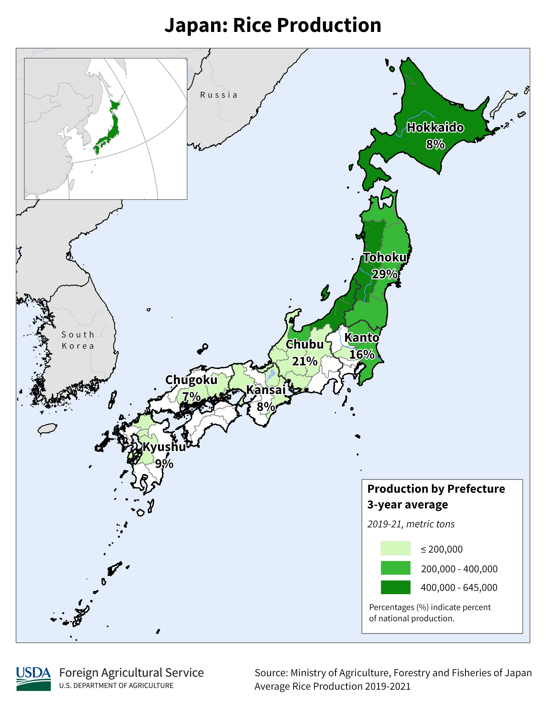
電柱や標識
- 電力会社・配線事業者が地域ごとに異なるため、電柱の電力会社ロゴ・プレート・ガイワイヤーなどに地域性がある(plonk it 日本のページ)
- 北海道や東北などの寒い地域特有のものがある
- 雪対策として信号機が縦になっていることがある
- 雪対策として電話ボックスの屋根が平らじゃないことがある
- 「停止線」の標識がある
- 配線にねじれ防止ダンパーがある(参考文献 雪による停電を防ぐ設備)
- 電柱のプレートや電柱のてっぺんの形が地域によって異なる(参考文献 Guide to Regional Plates on Japanese Utility Pole)(参考文献 A Japan guide by Fanty)
- 北陸・東北の寒い地域は横向きのプレートがありえる
- 電柱のガイワイヤー（Guy-wire・支線）が地域によって異なる(参考文献 Regional Differences in Guy-Wires for utility poles in Japan)
先ほどアップした送配電事業者マップですが、一部修正がありましたので、修正して再度アップします。 pic.twitter.com/W3z6MLmD8l
— 松尾 豪 Go Matsuo (@gomatsuo) April 29, 2019
代表的な企業の説明
| 企業名 | コード | 説明 | 決算 | 配当履歴 |
|---|---|---|---|---|
| トヨタ自動車 | みんかぶ | 世界最大規模の自動車メーカー。日本で一番売上と従業員数が大きい会社。 | 配当金の推移 | |
| 東京エレクトロン | みんかぶ | 半導体製造装置大手。コータ/デベロッパで高いシェアを持つほか、ウェーハプローバや成膜装置でもシェアが高い(参考文献 半導体・デジタル産業戦略)。 | 配当金の推移 | |
| INPEX | みんかぶ | 日本最大の石油・天然ガス開発企業。Forbes Global 2000にて2024年時点で世界564位の企業。 | 配当金の推移 | |
| Ocean Network Express | - | 川崎汽船、商船三井、日本郵船が共同で設立した定期コンテナ船を主な事業とする会社。定期コンテナ船の事業規模は世界6位。 | - | |
| 信越化学工業 | みんかぶ | 日本国内の化学メーカーとしては最大規模であり、材料を作る企業の中では利益率が特に高い。シリコンウエハー・フォトマスク基板材料・塩化ビニル樹脂の世界シェア１位、フォトレジストやシリコーンの生産でも世界シェア上位と生活に欠かせない材料を作る企業。 | 配当金の推移 |